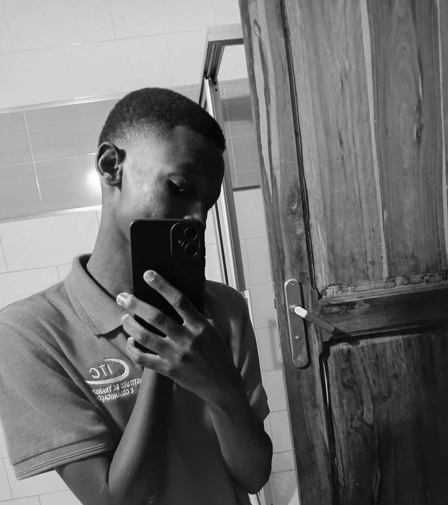
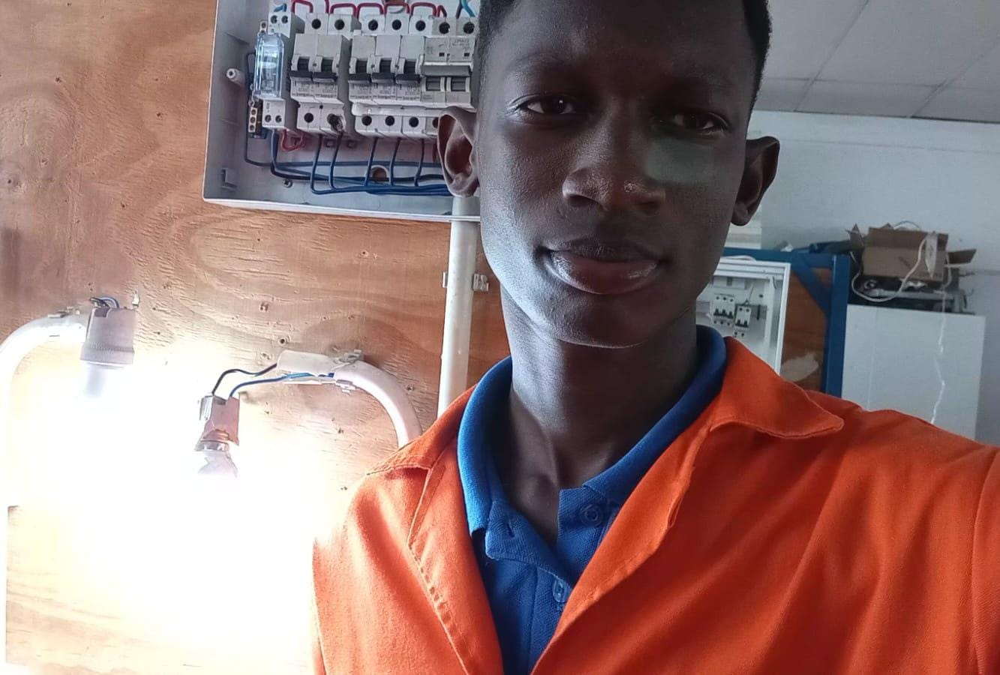

Sobre mim
Descrição
Sou um estudante que gosta do mundo da informatica e das tecnologias. Tenho interesse em desenvolvimento web, redes de computadores e ciber segurança.
Sou uma pessoa bastante dedicada, responsavel e criativa e gosto de enfrentar desafios
O meu objectivo é continuar a aprimorar as minhas habilidades, adquirir novas experiencias e construir uma carreira na area das TIC's.

Meu percurso academico no ITC
Ao longo do meu percurso academico desenvolvi diversos conhecimentos e habilidades tanto na area de eletricidade quanto na area de informatica.
Em 2025 fiz conclui o CV3 em eletricidade industrial, la eu aprendi a fazer circuitos eletricos, fazer projectos de eletrificação de residencias, aprendi a instalar circuitos de iluminação e tomadas e aprendi a fazer carregadores assim como muitas outras coisas.
Atualmente frequento o curso de Suporte informatico ainda no ITC. Tenho desenvolvido ao longo do curso habildades e conhecimentos sobre diversos temas como: Sistemas operativos, redes de computadores, segurança informatica e desenvolvimento de paginas web usando HTML e CSS.

Minhas metas
Desenvolver os meus conhecimentos e habilidades na area da programação no CV5.
Aprofundar conhecimentos en HTML, CSS, JavaScript, Phyton e outras linguagens.
Desenvolver projetos praticos para aplicar os meus conhecimentos.
Concluir a minha formação no ITC como programador web.
prosseguir com os estudos no ensino superior e construir uma carreira na area de TI.